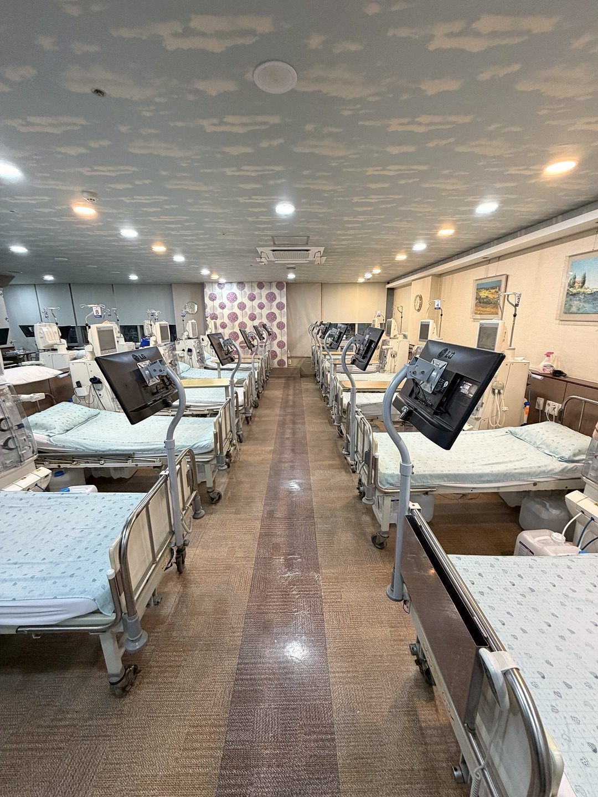

구리 인공신장실,
독일 FMC 혈액여과투석(HDF)로
야간까지 안심 투석
경기 구리시 교문동(구리역 인근)에서
오랜 기간 혈액투석을 이어온 신장내과 의원입니다.
구리·다산·남양주·중랑구 투석 환자분이
낮과 밤 언제든 같은 수준의 투석을 받으실 수 있습니다.
경기 구리시 교문동(구리역 인근)에서
오랜 기간 혈액투석을 이어온 신장내과 의원입니다.
구리·다산·남양주·중랑구 투석 환자분이
낮과 밤 언제든 같은 수준의 투석을 받으실 수 있습니다.

혈액투석은 주 3회, 회당 4시간을 몇 년씩 이어가는 치료입니다.
조형도내과의원은 투석의 질을 좌우하는 세 가지,
투석기 · 투석용수 · 의료진을 기준으로 인공신장실을 운영합니다.
만성콩팥병의 70%는 당뇨와 고혈압에서 시작됩니다. 조형도내과의원은 투석 전 단계의 콩팥 관리부터 투석 이후의 합병증 관리까지 한 의료진이 이어서 봅니다.
투석 병원을 고를 때는 투석기 종류, HDF 시행 여부, 투석용수 관리, 정전 대비, 의료진 상주 여부, 야간 운영을 확인하시는 것이 좋습니다. 조형도내과의원의 기준은 다음과 같습니다.
인공신장실 상세 안내




경의중앙선 구리역에서 가깝고, 경춘로 대로변이라 남양주·다산·중랑구(망우·상봉·신내)에서 버스와 승용차로 이동하기 편합니다. 지역별 교통과 야간투석 이용 안내를 정리했습니다.
경기도 구리시 경춘로 163 구리노블하임오피스텔 4층(교문동 245-8)입니다. 경의중앙선 구리역에서 가깝고, 경춘로 대로변이라 남양주·다산·중랑구에서 버스(1, 1-4, 10-5, 10-6, 15, 165, 166-1, 167, 167-1번 등)로 오실 수 있습니다. 건물 주차장을 이용할 수 있습니다.
야간투석은 월·수·금 밤 23:00까지 운영합니다. 인공신장실은 41병상 규모로 연중무휴 운영하며, 시작 시각과 병상은 요일·시간대별로 배정되므로 인공신장실 직통 031-565-9051~2로 전화 주시면 가능한 일정을 바로 안내해 드립니다.
가능합니다. 현재 다니시는 병원의 투석 기록(투석 처방, 최근 혈액검사, 복용 약, B형·C형 간염 검사 결과 등)을 지참하시면 상담 후 일정 조율을 도와드립니다. 이사·직장 이동으로 옮기시는 분이 많습니다.
조형도내과의원은 독일 FMC 5008S 투석기로 모든 환자에게 HDF를 추가 비용 없이 시행합니다. 혈액투석은 건강보험(산정특례) 적용 대상입니다.
구리 · 다산 · 남양주 · 중랑구 투석 환자를 위한 인공신장실
처음 투석을 시작하는 분, 다른 병원에서 옮기는 분, 낮 시간 투석이 어려운 직장인 모두 상담 가능합니다.